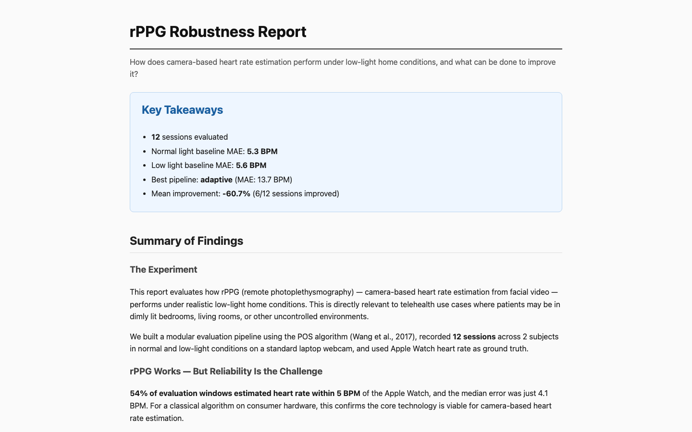
01
rPPG Robustness Report
A personal research project testing camera-based heart-rate estimates in low light using Remote Photoplethysmography (rPPG).

A personal research project testing camera-based heart-rate estimates in low light using Remote Photoplethysmography (rPPG).
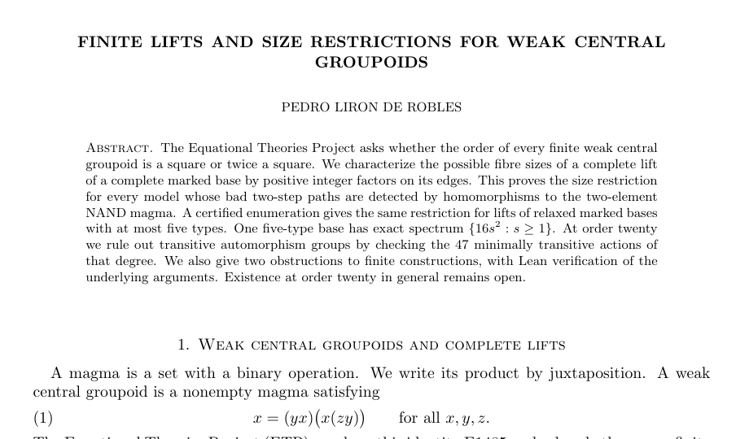
A mathematics preprint on which sizes are possible for finite weak central groupoids. It proves an exact size rule for one family and rules out fully symmetric examples of size 20.
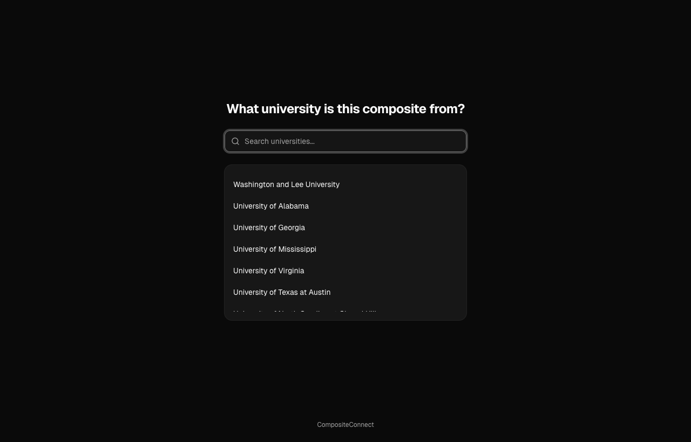
A PWA app for turning fraternity composite photos into LinkedIn profiles. Uses OCR and CNN technology to extract data.
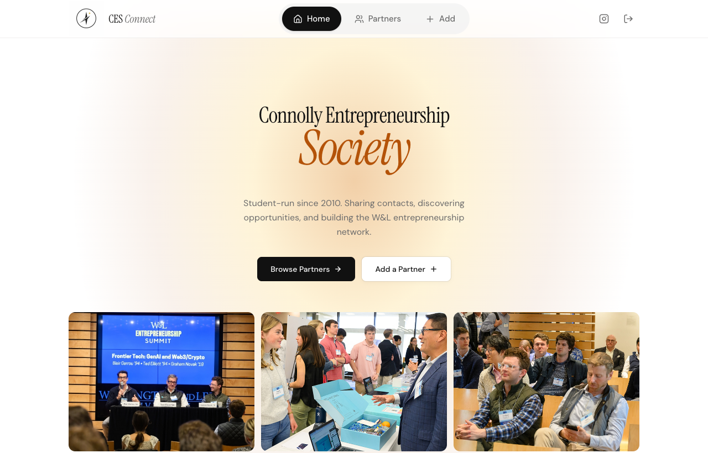
A site that connects W&L's Connolly Entrepreneurship Society members with alumni and people in the startup space.
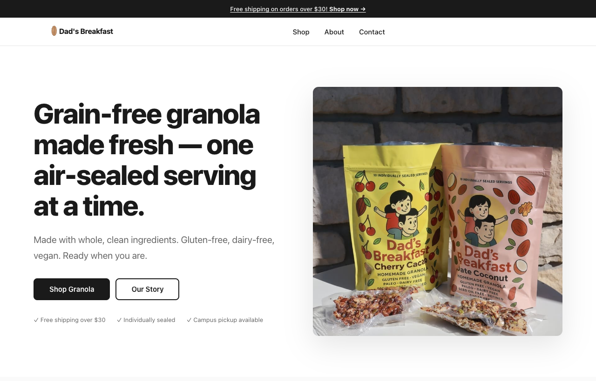
A grain-free granola brand website that I built for a student business on campus.
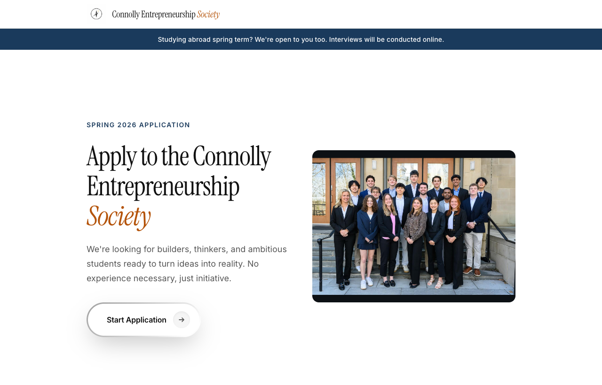
A site for reviewing and managing applicant information to the Connolly Entrepreneurship Society.
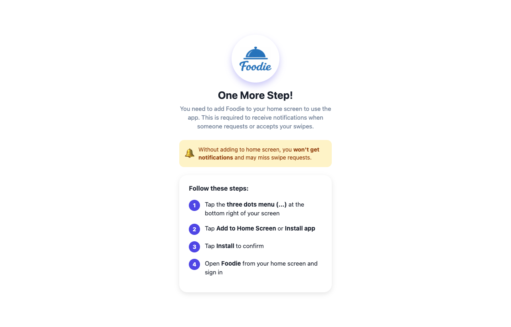
A PWA campus meal-swipe exchange platform for W&L students.
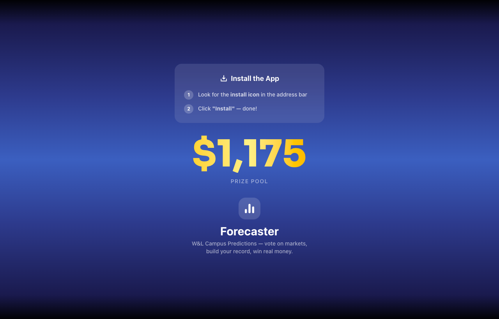
A PWA forecasting page for Washington and Lee-related questions, inspired by Polymarket.
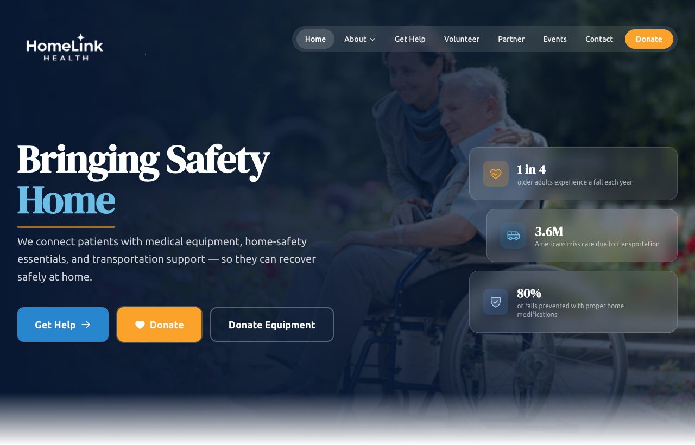
Website I built for a non-profit that raised $5,000 for charity.
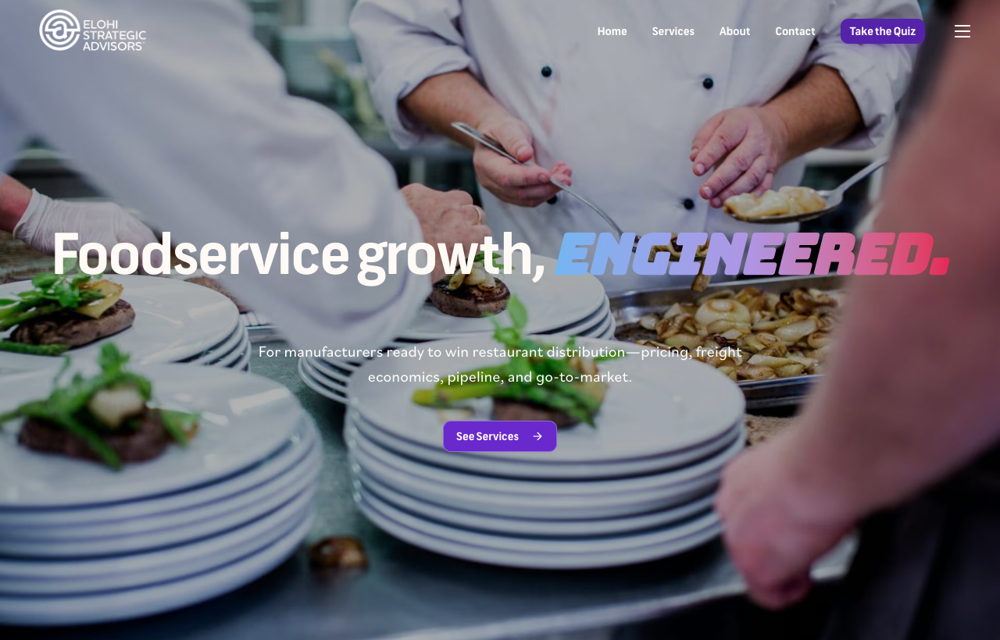
Prototype website I built for a food-consulting company based in Chicago, Illinois.
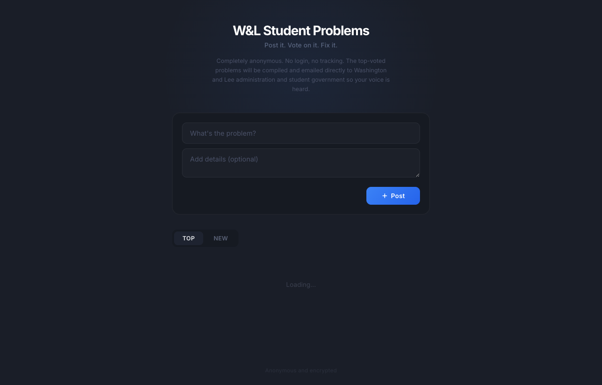
A deprecated site for collecting and browsing W&L problems.
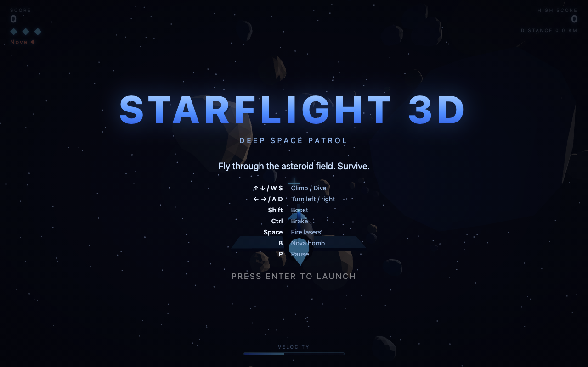
A 3D space flight game built with Three.js — dodge asteroids, collect power-ups, and chase a high score. Playable in the browser. I two-shotted it with Fable.

I realized that just looking at the water from my balcony wasn’t enough to tell whether it was clear enough to go snorkeling and watch fish, so I built a beach-specific forecast. In my experience, it has been very accurate.
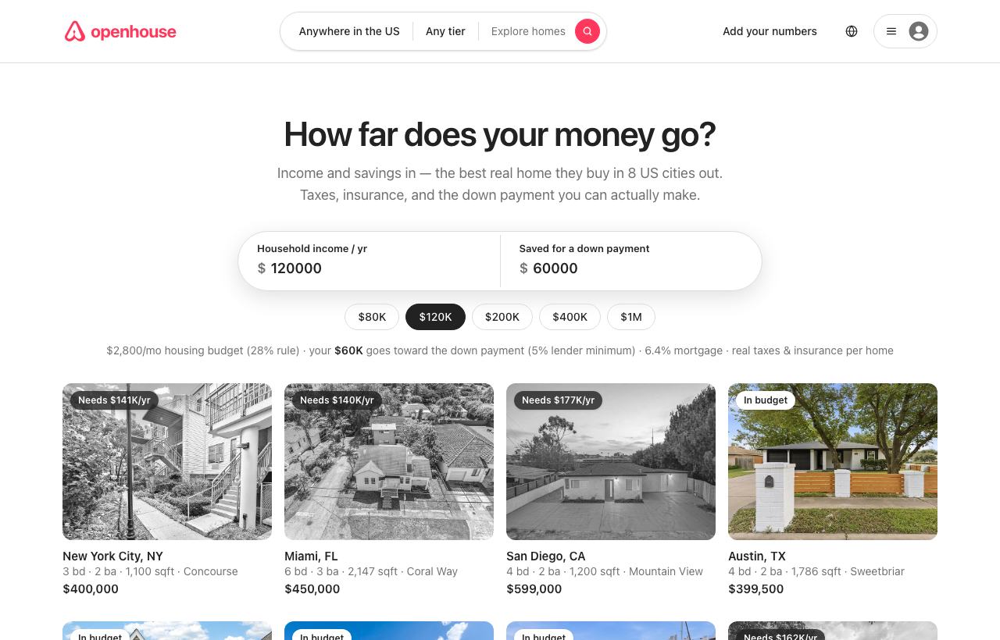
An Airbnb-style toy for window-shopping real homes across 8 US cities — live Zillow data, true monthly costs, and what the same money buys somewhere else.
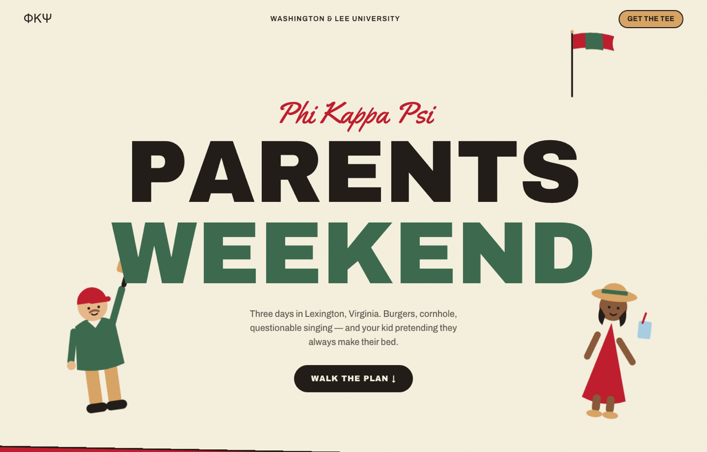
An event site for Phi Kappa Psi’s Parents Weekend at W&L — a scroll-driven itinerary with springy letter animations, flat illustrated characters, a parents’ glossary, and an interactive 3D tee wearing the real shirt print.